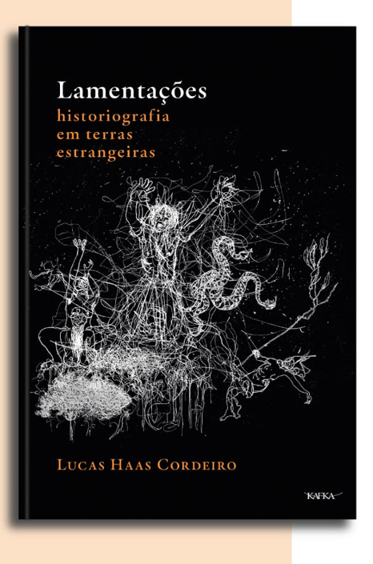
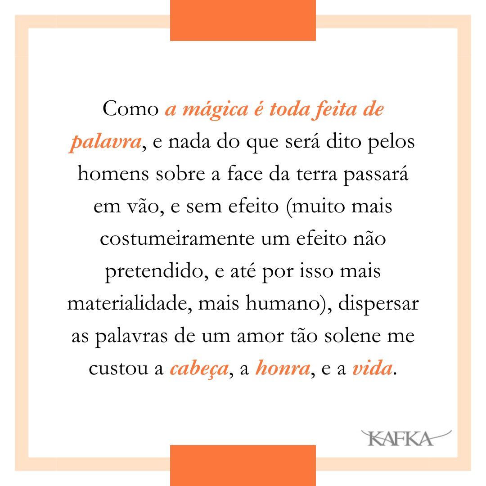
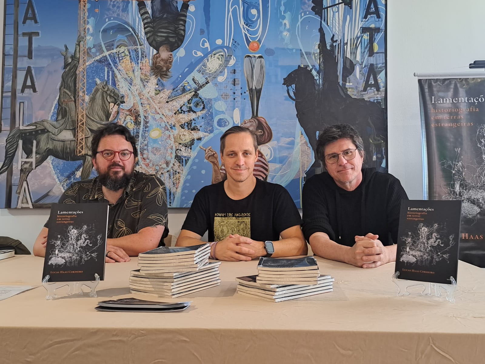

Sobre
“Lamentações” é um relato que proporciona uma viagem em etapas. Passa pelo império persa reconfigurado, construído de forma gloriosa um milênio depois de Maomé. Temos Lisboa como transição entre o primeiro e o segundo texto, passagem para uma imersão histórica – e linguística – pelas missões exploradoras da terra brasilis do século 17. Salta, por fim, para a Buenos Aires de 2016, aqui encenada como o futuro distópico de um país que se fecha a toda influência estrangeira.

Resenha de Tiago Cordeiro
jornalista e grande irmão
O romance é um gênero anacrônico. Não há mais apelo popular para o formato. No entanto, mesmo em um contexto tão adverso, sobrevive. Sobrevive pela
Este livro que você tem em mãos é anacrônico, com orgulho. Carrega história, filosofia e literatura. Ecoa Umberto Eco, Thomas Mann. Tem Rumi. Tem David Foster Wallace. Tem a coleção Vagalume, entre tantas outras referências, como a própria da mãe do autor, professora de português e autora de versos.
Lucas Haas Cordeiro chega ao sexto livro. E assim conclui um percurso vasto, relevante, intenso. Ele diz que a literatura é um diálogo com os mortos – do passado, sim, mas também do futuro, na figura de pessoas que ainda não nasceram. E de fato, é assim que a sua obra se posiciona.
Este “Lamentações: historiografia em terras estrangeiras” é resultado de uma jornada, inclusive espiritual, mediada de forma considerável pelas mulheres xá-imãnicas – enquanto elas existirem na floresta, “não haverá dúvidas de que o Céu permanecerá sobre nossas cabeças”.
O livro também ecoa as suas obras anteriores. Em cada uma delas, é evidente a combinação entre erudição e sensibilidade.
Mas este texto também reflete o amadurecimento do autor, no auge de seus recém-completados 35 anos.Ao longo da obra, uma pergunta é intuída, e então verbalizada: o que é o tempo? A resposta do autor dá uma bela ideia da proposta da obra:

Trecho selecionado
No horizonte, como um reflexo caminhante das águas do rio, saída das profundezas, onde resgatara sua identidade própria como um ser-das-águas, a imagem de Enã, o deus das águas, se aproxima. “Arerererere!”. Entre as árvores, o silvo de um pássaro, homenagem pela fortuna de um novo dia. “Arerererere!”, é a voz de Enã que circula entre as trilhas da mata, entre as trilhas do tempo. Suas passadas são leves, a boca aberta é ofegante, e estática, ainda que os olhos, de um azul-piscina mais verdadeiro que a Terra, venham marcados pela experiência do dia – são sete horas da manhã, ela pensa. E no espaço entre as horas, entre os dias de presença e as ausências de sentido, Marina enuncia o mantra que se desnuda como imperativo moral:
Há história, e se repete, desde o princípio. A uma criança que nasça será concedida a honra de um Ser: o amor é a fuga dos tempos. A fuga dos tempos: é o amor.
